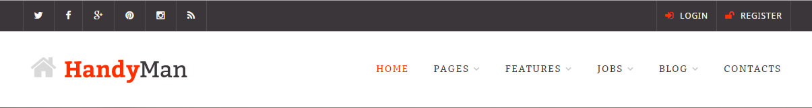
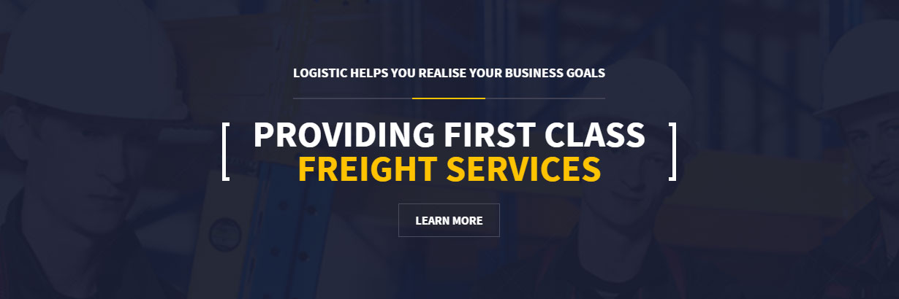
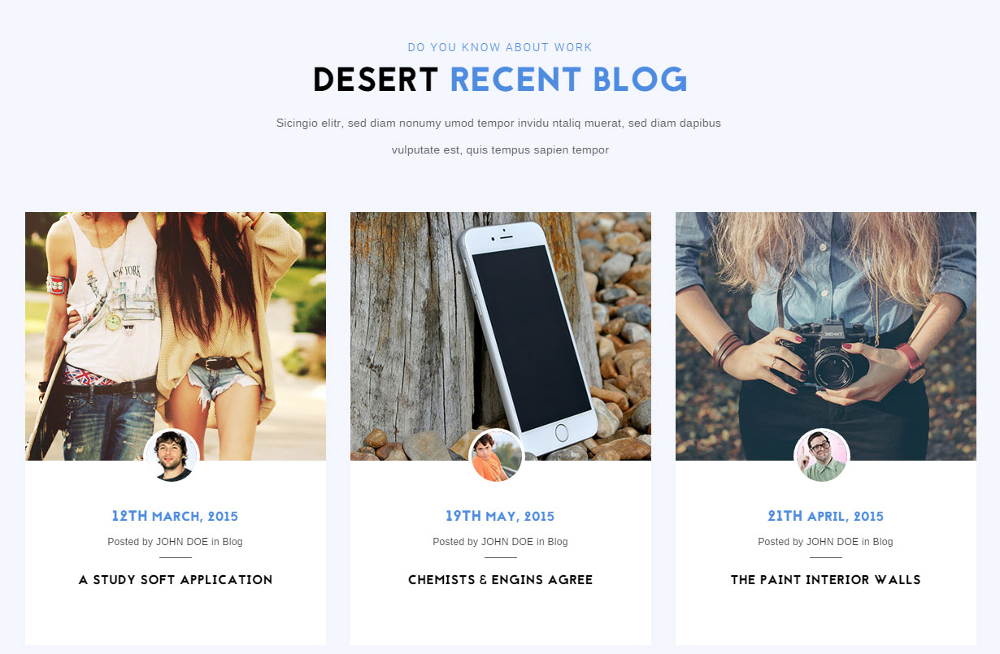
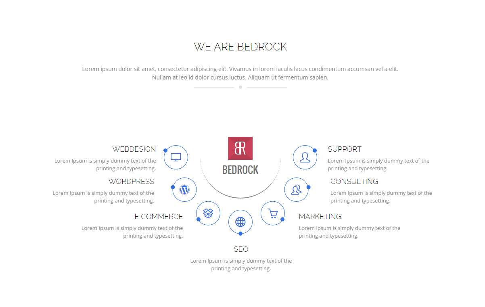
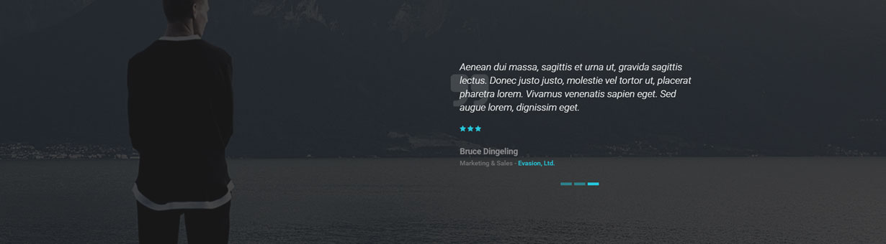
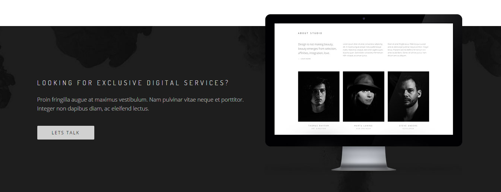
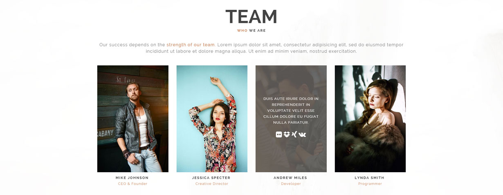
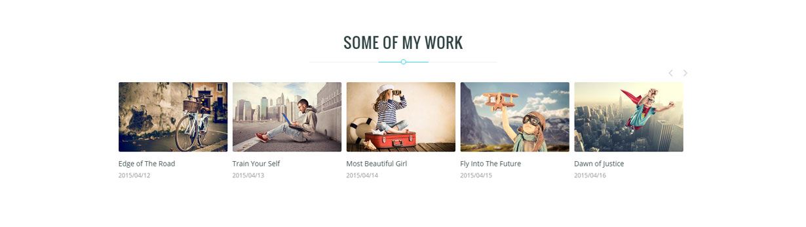
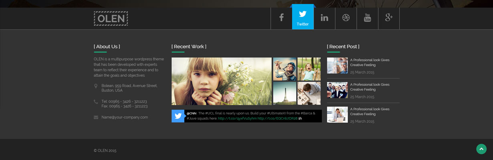

Header

Target Audience
A handyman company could target consumers across a wide range. What the design tells me is that it is simple enough to navigate for a less techy person, but has features such as social media icons that would attract avid internet users. However, handyman services are most likely needed by homeowners or business/land owners, and maybe even slightly leaned toward the female market. That said, the target audience would most likely be either gender, between the ages of 35 and 60, and middle to upper class.
Client Goals
The obvious goal for any business is to make money, and this one is no different. Goals that will support this is to gain jobs through an online price quoting system or plainly receiving a phone call. Since there is a Login/Register button, there may be services that are sold online which would also be a goal to achieve. Lastly, the placing and amount of social media icons shows the company's effort to increase its online community reach and following, so gaining followers through these platforms is another goal.
Design Critique
The spacing of the elements on this component makes it as a whole very easy to read. The contrast of backgrounds between the top bar and the main area help divide the secondary goals (the top bar) and increase the focus on the primary goal (the logo and content will make the money). However, the choice of the red-orange accent color is a little confusing. While it can carry some great emotions such as excitement and energy, it could also instill the sense of danger or warning. These aren't the types of feelings a handyman would want to portray.
Call-To-Action

Target Audience
This one is not as difficult to analyze as it is very inline to commercial-only consumers. As most people know, freight shipping is only used for large to very large shipments, and is usually very expensive unless you have an account with the shipper. That said, the target audience for this would most likely be 25 through 50 year olds that either own a business that ships large amounts of physical products or work as a shipping manager.
Client Goals
Again, the goal for this business is to make money. For the highly competitive industry of shipping, the main goal for the website would be to gain new clients, and hopefully new accounts. Another goal, when looking at this CTA, could be to set up a free quote or some sort of consultation in order to get a salesman to speak directly to the client. Beyond this, the goal would be to manage current clients by allowing them to create shipments online as well as track them.
Design Critique
The first thing you'll notice is the hierarchy of the text. While "Logistic helps you realise your business goals" is at the top and even in capital letters, "Providing first class freight services" is the first thing you'll read because it's bigger and surrounded by brackets. The designer obviously wanted this phrase to be the focal point and succeeded. However, as a traditional CTA, I would expect the button to be highlighted much more. Instead it fades a bit into the background and makes me feel that it is not as important as the message says.
Latest News / Blog

Target Audience
This is a component that you would see below the call-to-actions and main content on a front page. The images of the writers on the elements creates a personal relation to the news that the website is posting about. The target audience would most likely be dedicated users to the website's cause or services; however, it could also be potential new customers/users looking to dig deeper into the company or organization.
Client Goals
The goal for this component is to increase the organization's community outreach as well as keep their current followers informed about new happenings, products, or just to keep in touch.
Design Critique
The soft blue colors give the user much comfort and do not over-excite the articles -- this could be a good thing or a bad thing. The rules of third are obviously a big part of how this was designed and makes the articles flow nicely next to each other. The confusing part is the hierarchy of the text as date is above and the same size as the title. While the date may be important to some, it should never be more important than the title. In addition, it makes it difficult to understand where to click to read the article.
Services

Target Audience
People in need of a website span across all age and class brackets these days. Though, the professional look of this services component as well as the large span of services offered tell a clearer story. A web development business that covers so much ground is most likely to be targetting middle to upper class business owners. Most startup companies don't have or understand the funds needed to build websites, so the focus will be on established companies that will become long-term clients.
Client Goals
Once again, money is the primary objective of this component. The deeper goal is to set themselves apart from the thousands of other web development companies get a quote request submitted. These types of companies also focus a lot on the clients they do serve, which would probably be placed somewhere above this component.
Design Critique
While the component doesn't mention "services", the grouping of the features around the logo makes it subconscious to the user. Similarity and proximity are also in effect here that make the features seem grouped even though they are layed out in a circular pattern. The shade of blue accents with the white background instills trust and comfort that portrays all of the emotions that a new customer would want in a company they are about to spend a lot of money on. However, it would be beneficial for a user to be able to click somewhere on the services to gain more info. The design doesn't immediately give the sense that it could be accomplished here.
Testimonials

Target Audience
Testimonials, if necessary for a business, can be a great way to target a specific audience. In this case, it seems to be more technology-based and the lack of arrows or text for the rotator controls could mean that it is targetting a younger audience, approximately the 18 through 35 years old range.
Client Goals
The main goal is to showcase the company's trustability and earn confidence from inquiring users. Just as reviews on Yelp or related websites do, testimonials give a personal insight into people that have used the services or products you are about to purchase by adding their names, positions, and companies. Another goal could be to inspire current customers who may be featured here.
Design Critique
The dark background and light text are almost always directed toward a younger audience. In combination with the neon blue, it creates a very modern or futuristic feel. However, the first thing that I noticed was the main in the background looking in the direction of the text that is aligned toward the right. This helps create the focal point for the testimonials without it needing to be in the center of the screen.
Secondary Call-To-Action

Target Audience
Sometimes there are secondary goals or even sub-categories of the primary goal that meet a large percentage of your main audience. While these wont be at the top of the page, they still have their effectiveness for those who continue to scroll down. The audience for this component specifically would be business owners that are on their way up, looking for a do-all solution for a part of their company that they'd rather not hire for. Age range would be somewhere between 30 and 45, and middle to upper-middle class.
Client Goals
As mentioned above, this component would be more for secondary goals such as a specific industry or service that the company provides. While, the main objective is to make money, this would be used to capitalize on a sizeable minority of their customers. Clicking on the "Let's talk" button is the obvious goal, but beyond that, complete the task it leads to is the ultimate goal (besides money).
Design Critique
The design uses an sample of the company's work on a single platform they support, though since the messages states "services", I would have expected more than that. However, the heirarchy of the font styles are appropriate and the call-to-action button stands out the way it should.
Team Members

Target Audience
The audience for this one could be anyone, initially. Looking closer, the users that would be interested in the team that runs a website, company, or organization are most likely more interested in its credibility as a team. This could mean potential customers, but also potential employees or partners.
Client Goals
The primary goal for this component would be to showcase the level of talent of the company's team, both individually and as a whole. Another goal is to create a personable approach to potential customers, putting faces and personalities to a website.
Design Critique
The similarity of image sizes and overall height creates a flow that makes them easily able to tell apart, even without a solid border separating them. The brown highlight color portrays a level of structure and support while highlighting the team ("who" and "strength of our team" and the job titles).
Portfolio

Target Audience
From the wording of the title, "Some of my work", this is obviously a personal website and most likely not a business (outside of a sole-proprietorship). In this particular component, it seems to be a freelance or solo photographer that doesn't have a clear industry focus (weddings, entertainment), so the audience could be anybody from the ages of 18 to 50, ranging from the lower to middle class. The reason higher class isn't a focus is because it is an entirely different market and hard to focus on both.
Client Goals
For solo photographers, money is an objective of course, but building gaining credibility in the industry is just as important. Obviously, the point of gaining credibility is to make more money, but that is a bit outside of the scope that is being discussed. The main goal for this component is to convince potential customers that the photographer is what they need.
Design Critique
As in the previous component, the design does a great job of making each section look like a group without surrounding borders. The concern is that because they are so close, the titles have to be somewhat short, otherwise it could look cluttered. It would also be beneficial to include some sort of category of the type of photography to help potential customers see the diversity of the artist's work.
Contacts

Target Audience
The contact form shown here is simple, asks for the absolute minimal information. At the same time, it has a business address and a phone number, so it's most likely more than a blog but less than a large business. It is easy to deduce that this contact form is more of a formality than a dependable way to reach the website owner. The target is most likely older users that would prefer to call or visit, as opposed to submit a direct email and wait for a reply.
Client Goals
The goal for this component is to offer an appropriate level of customer service for their consumers and followers. While the website isn't built for a constant flow of customer support issues, it directs the users to a phone number and address for anything serious.
Design Critique
The iconography is important here and allows users to quickly reference each type of contact style. The use of contrast also comes into play as the icons and button all display actions. While the icons aren't clickable actions per say, they insinuate an action, and the "Submit Message" button is an obvious action to send the message.
Footer

Target Audience
The footer shown here combines a lot of information about the website/company into a section that is usually just navigational links or company & copyright information. This leads us to believe that the target audience for the component are people who skim through websites quickly, and this footer reinforces missed information.
Client Goals
The goal of this footer is to showcase the important aspects of the website and be a quick way to view it all at once without the complexities of the main content. A parallel goal could be to redirect users that have skimmed past main points back to the important stuff. Kind of like a way to revive an unconvinced user.
Design Critique
The dark background with light text is a common feature of footers these days and it usually constrasts the opposite of the main content. This is done quite nicely as the sections are easy to read. However, there doesn't see to be a main focus or point to the footer, but the portfolio definitely stands out with the image of the girl staring directly at the user. She is almost saying to keep looking. Other than that, the social media icons are very fancy when you've mouseovered them, but this only appears to be a cosmetic effect as they are somewhat boring when the mouse isn't on them. If anything is lacking overall, it is that there doesn't seem to be any organization or design synergy between the elements.